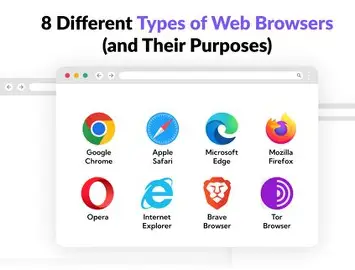

Web browsers

Web browsers act as gateways to the internet, fetching, rendering, and interacting with web content while prioritizing user privacy and performance.
Rendering Pipeline
- Navigation: URL parsing, DNS lookup, TCP/TLS handshake.
- Parsing: Critical rendering path—HTML to DOM, CSS to CSSOM, combined render tree.
- Layout/Paint: Compute positions (reflow), rasterize to bitmaps.
- Compositing: GPU-accelerated layers for smooth scrolling/animations.
JavaScript engines (V8, SpiderMonkey) use just-in-time compilation. Sandboxing isolates tabs via multi-process architecture.
Major Browsers and Engines
- Chrome/Edge (Blink): 70% share, dev tools, PWAs.
- Firefox (Gecko/Quantum): Privacy-focused, containers.
- Safari (WebKit): Apple ecosystem, energy-efficient.
- Opera: VPN built-in, sidebar messengers.
Extensions via WebExtensions API; sync across devices.
Advanced Features and Security
Incognito/private mode; password managers; machine learning for fingerprinting block. WebAssembly runs C++ at near-native speed. Service workers enable offline PWAs. Tracking prevention (ETP in Firefox).
Evolution and Stats
Mosaic/Navigator (1990s) → standards wars → evergreen updates. 5.5 billion users; Chromium dominates open-source.